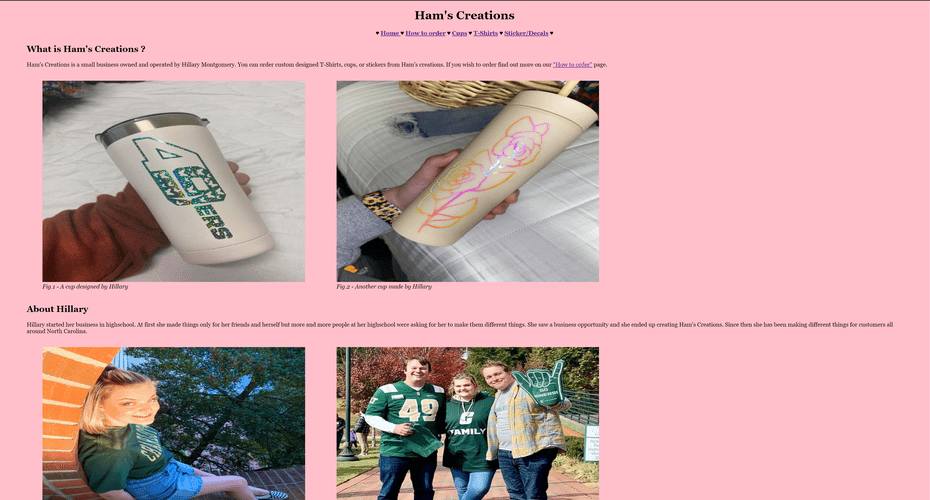

Contrast: The contrast of the webpages is well done. The color choices are great and they work well with each other.
Repetition: The overall design of the webpage repeats as necessary without being too repetitive.
Alignment: The only problem I see with alignment is the thumbnails of the images on the pictures tab. They are left-aligned instead of aligned to the center. Other than that, everything is great.
Proximity: Use of proximity is well done. Everything appears to be where it needs to be in relation to each other.
Good use of interactivity with the slideshow and the contact us form.
Overall, this website looks amazing.
Peer Review #2 - Mike Bucala
 Mike Bucala's Client Project
The pages are somewhat consistent.
Contrast: The contrasts of the pages is well done. The only problem I see here is that the black color was used instead of near-black per instructions.
Repetition: The webpage manaages to repeat without being too repetitive.
Alignment: The only problem I see with alignment is the images on the homepage seeming to be centered on the left side of the page. Other than that, alignment is good to go.
Proximity: Proximity is done well. Everything appears to be where it should be.
interactivity is well done, only problem I see here is the use of the exact same slideshows on the cups/tshirts pages with different pictures.